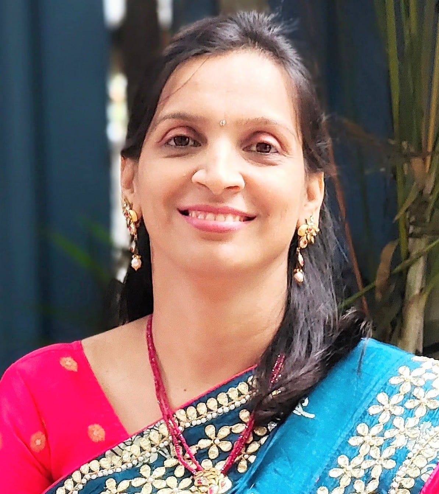
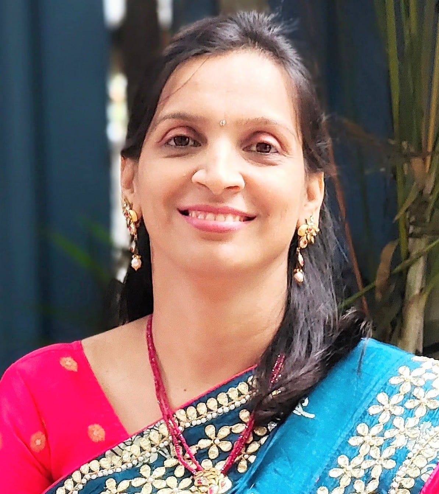

Conecte Corpo e Espírito
O QUE OFERECEMOS?
Oferecemos um caminho de bem-estar integrado através de serviços de Yoga (online e presencial), Terapia Ayurveda e Florais de Bach. Nossa missão é fornecer ferramentas para o seu autoconhecimento e equilíbrio.
QUAIS OS BENEFÍCIOS PARA VOCÊ?
Ajudamos você a melhorar a saúde do seu corpo, mente e espírito. Integre a espiritualidade no seu dia a dia para reduzir o estresse, aumentar sua vitalidade e encontrar mais clareza e paz interior em sua jornada.
Nossa Equipe
 

LUCIANA GOMES PEREIRA
Professora de Yoga há 20 anos e terapeuta Ayurveda. Com uma vasta formação na Índia e no Brasil, Luciana desenvolve aulas que unem a precisão do Iyengar Yoga com a filosofia do Yoga Clássico de Lonavla.
DR AJIT & DRA SMITA MANDLECHA
Médicos e Nutricionistas ayurvédicos com vasta experiência clínica em Pune, Índia. Especialistas em Marmaterapia, Panchakarma e planos nutricionais personalizados.
Yoga Online e Presencial
COMO AS AULAS SÃO OFERECIDAS?
Aulas semanais via Google Meet ou presenciais em São Paulo. A abordagem combina o alinhamento preciso do Iyengar Yoga com a filosofia do Yoga Clássico.
HORÁRIOS ONLINE (Brasília)
- Segunda e Quarta: 10h
- Terça e Quinta: 08h
Agende uma aula experimental!
Terapia Ayurveda
CLÍNICA DE AYURVEDA
Atendimentos presenciais em SP e online. O Ayurveda trata a causa raiz dos desequilíbrios (ansiedade, insônia, digestão) promovendo saúde duradoura.
INTERCÂMBIO ÍNDIA-BRASIL
Consultas online em português com intercâmbio direto com o Dr. Ajit e a Dra. Smita na Índia para diagnósticos profundos.
Terapia Floral de Bach
HARMONIZAÇÃO DAS EMOÇÕES
Essências energéticas que atuam no campo vibracional para harmonizar emoções e pensamentos. Uma terapia suave e natural criada pelo Dr. Edward Bach.
ATENDIMENTO ONLINE
Conversamos sobre suas questões emocionais para identificar as essências ideais. Poderoso auxílio para depressão, traumas e ansiedade.
Acompanhe


YOUTUBE & INSTAGRAM
Siga @luespiritualidade e nosso canal no Youtube para meditações guiadas, horários de aulas e dicas rápidas de bem-estar.